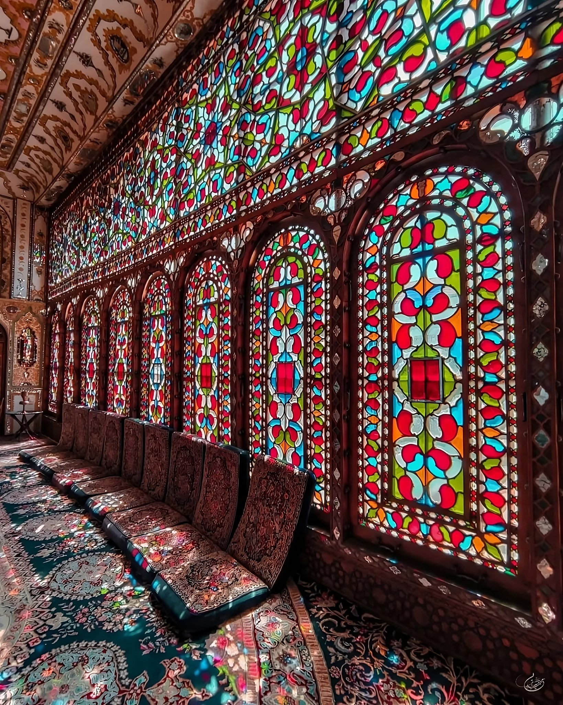

Azadi Tower
Formerly known as Shahyad Square, is a mainly green city square in Tehran.
Darake
The area is popular with tourists as a hiking and mountain climbing destination.
Masoudiye Mansion
The Masoudieh Mansion is a historical mansion in Tehran, Iran. It was built as a residence for the Qajar prince Mass'oud Mirza Zell-e Soltan in 1878
Tochal
Tochal, is a mountain and ski resort located on the Alborz mountain range
Gheymeh stew
Gheymeh is an Iranian stew consisting of diced mutton, tomatoes, split peas, onion, and dried lime, garnished with golden, thinly sliced crispy potatoes


Jujeh Kabab
Jujeh Kabab, is the Persian version of the chicken kabob and one of Iran's most delicious and popular dishes.



Sholeh Zard
Sholeh Zard is a delicious old fashioned dessert that is very delicate and light in texture, mild in sweetness and it gets its golden color from saffron.
Kubideh Kabab
Kabab koobideh or Kobide is an Iranian type of kofta kabab made from ground lamb or beef,